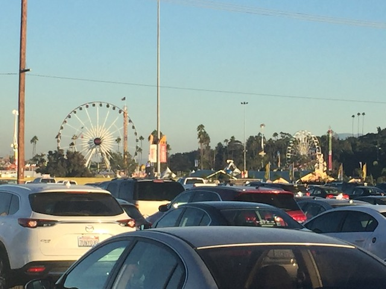

| |
L.A County Fair 2018

All right. I know for a while, I always did a yearly trip to a fair. Primarily the Ventura County Fair at first, but after that started to go downhill, we switched to the L.A County Fair. However, financial lockdown got in the way. Yeah. We were able to go during some financial lockdown years, but 2014 was the last year we were able to go. Ever since then, Financial Lockdown pretty much took the fair away from me. Well, this is the first year in a LONG time that I'm NOT in financial lockdown. So of course, I had to go back to the L.A County Fair. And I must say, after 4 years of a fair hiatus, I'm definetly glad to be back here.
Come. We can walk. We really don't need to bother with this tram that isn't even saving us any time.
Ugh. There were some deals to significatly lower the fair price, but because of certain issues, we were running late, and because of that, we missed the cut off time for the deal. So yeah. Not happy about the extra $30 I had to spend and could've easily avoided. >=(
Hey look. They brought back Galaxy for this year.
Now I rode this back in 2014. However, I didn't count it because I had heard from others that this was just Backdraft from the Ventura County Fair WAY back in 2005. I was skeptical of those claims as this seemed MUCH stronger and better than Backdraft, but when in doubt, always air on the side of caution and don't count it. Well, I forgot about the ride until now. I did some research, and I've confirmed that this is NOT Backdraft, which means I get to add this to my credit count! YAY!! I GET A CREDIT TODAY!!!
I should've trusted my gut. But oh well. Technically not a new credit as I rode it 4 years ago, but for the sake of not f*cking up my credit count, I'm treating it as if I first rode it today (It's just a silly fun game for coaster nerds anyways). So...Credit #559.
It ASTONISHES me how so few people like Tango. I was here with another friend, took him on Tango, and sure enough, he didn't like it. DAMN IT!!! Are Cody and I seriously the only 2 people who appreciate the insanity of Tango!?
I know this video is from 2014, but it showcases the crazy and insanity of Tango (plus, you see me on the ride). So here it is again.
 Hmm. They have one of those new enterprises that they have at Kentucky Kingdom here.
Hmm. They have one of those new enterprises that they have at Kentucky Kingdom here.
It's that time of year again. Yes. It's time to try another crazy deep fried food that's probably as unhealthy for me as a cigarette! =)
While not a deep fried food, I did get to finally try that Doughnut Burger. And...this was by far the most dissapointed I've ever been in a fair food (OK. Maybe not quite as dissapointing as Deep Fried Watermelon, but the fact that I'm comparing the doughnut burger to Deep Fried Watermelon, is not a good thing). I know something like a doughnut burger sounds just "WTF!?", But I'm thinking "Maybe this'll be good in the same way Chocolate Covered Bacon is good, or any of those other crazy fair foods". But rather, what the doughnut burger really tastes like is the burger patty of a burger you'd get for school lunch while in High School, only with doughnut buns. And if you think that the doughnuts they use for the buns are fresh Krispy Kremes, Nope! The doughnuts taste more like the doughnuts you get in a box from the gas station. After they've gone stale. So when you have a crappy burger patty, and you combine it with two crappy doughnuts, then it's no suprise to report that the Doughnut Burger is naturally...well...crappy.
The only thing creepy about this ride is the guy running it.
For those of you who like retro arcade games, here you go.
I used to rob people of their money. But now, I'm sad and outdated thanks to free phone games. ='(
Hey Jason. I know how much you enjoy cooking. So here you go. ;)
And of course, it's not cooking if you're not also getting drunk at the same time.
Don't pretend that you're just interested in Dia de Los Muertos. This the first time I've seen that stuff. You're just cashing in on Coco.
You know, my college diet doesn't need its very own exhibit. It's not that special.
You know, most tourist traps are so tacky that I wouldn't be surprised if I were to actually see giant bottles of Fanta on the side of the road.
 OK. The wristbands were MUCH more expensive this year than in previous years. But on the plus side, they do now include games. I usually never play them since I never win anything, but hey. If it's free...
OK. The wristbands were MUCH more expensive this year than in previous years. But on the plus side, they do now include games. I usually never play them since I never win anything, but hey. If it's free...
"You may not be able to win anything, but I can."
BEST RIDE OF THE DAY!!! MUCH BETTER THAN STUPID TANGO!!!
Hmm. This is a long line. I wonder what it's for?
Ahh. It's Speed. Sadly, Speed didn't seem quite as crazy as it did in previous years. I really hope they didn't slow down the cycle and this is just a fluke ride. ='(
 Man, I really wish that the spinning coaster here actually spun.
Man, I really wish that the spinning coaster here actually spun.
Please come to the Southwest. We have....uh...flowers! Come! We have flowers!
NO DRINKS ALLOWED!!! Well, except for those with lids. Those are fine. Congratulations. You discovered the Lid Loophole.
Damn it! Now I'm playing the Yellow Rose of Texas in my head.
 You know, Oklahoma surprisingly is not that bad. It's certainly much better than f*cking Amarillo.
You know, Oklahoma surprisingly is not that bad. It's certainly much better than f*cking Amarillo.
Hi tacky cardboard cutout of a tacky tourist trap motel in Arizona! =P
Hmm. Mt Baldy. I wonder if anything happened there? Particuarly while trying to climb 3 mountains in 24 hours?
Clearly, these men take their knighting very seriously.
Am I the only person (aside from Cody) who finds Route 66 incredibly overrated? I haven't done the whole thing, but the general path is followed by the 40 Freeway, and...it may sound weird, but the 40 is my least favorite major freeway. None of the stuff on it really intrested me, and plus, they brag about Amarillo. *barf* F*ck Amarillo.
You people don't need to scream. This is the L.A County Fair. NOT the Ohio State Fair. ;)
It may be small, but Mega Drop still packs a nice little punch. =)
You ready for some wacky fun!? Cause now it's time for Moscow Circus! Uh...I mean Fun Factory (Wow. I guess all the 2014 names really stuck).
NOODLE ATTACK!!!
You know there's only one way down now. >=)
 More funhouses need giant slides in them.
More funhouses need giant slides in them.
"Shut up! I'd like to see you do a better handstand in here!"
"Don't f*ck with me! I'm going to win that stuffed Owl!"
And finally, we close out on one of the Carnival Kings. The Zipper. I was really lucky to get on this since they don't allow single riders, and everyone else either was too afraid of it or couldn't afford it. I was nearly about to walk away when I came about a group of 3, and the only way could ride was me. So not only was it good to get back on the Zipper, but it was running REALLY good. We got 5 flips in a row (luckily, the guy I rode it shared my goal of getting it to flip as much as possible), and it reminded me of just why I love the Zipper so much. And that was the L.A County Fair. While this wasn't the best fair year ever, it still was a ton of fun. I'm happy that I got to come back.
Home
|